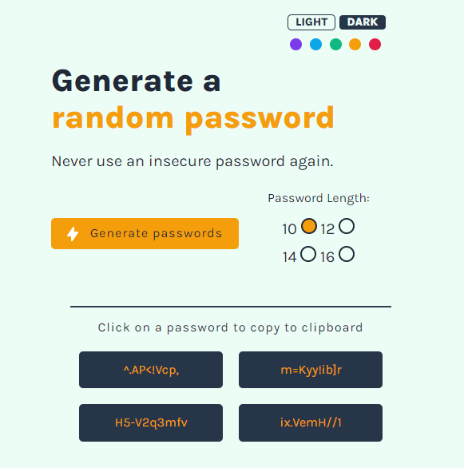

SZCSNY
<frontend>
For stronger security
This was one of my first solo projects on Scrimba I only had the Figma design for the app and had to make it look and function as presented.
At the time I knew very little of CSS and JS but I wanted to push myself to create extra features which were not in the Figma design. This meant making dark and light modes and colours as well as password length toggleable and creating buttons that copy the password onto the clipboard.
I was very proud at the result and how I was able to make these extra features without any outside help.
My Password Generator